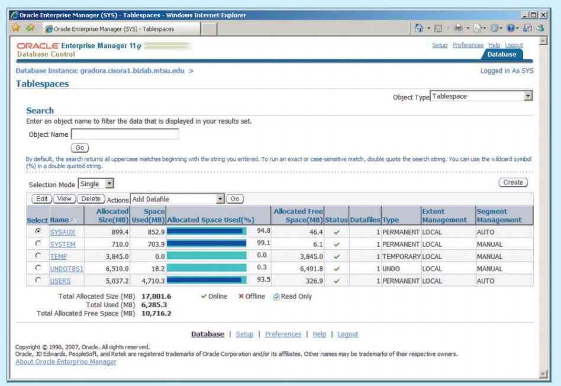

That data are a valuable business asset requiring careful management
That data are a valuable business asset requiring careful management15 DATABASE ADMINISTRATION AND SECURITY
In this chapter, you will learn:
That data are a valuable business asset requiring careful management
How a database plays a critical role in an organization
That the introduction of a DBMS has important technological, managerial, and cultural consequences for an organization
What the database administrator’s managerial and technical roles are
About data security, database security, and the information security framework
About several database administration tools and strategies
How various technical tasks of database administration are performed with Oracle
Preview
This chapter shows you the basis for a successful database administration strategy. Such a strategy requires that data be treated and managed as a valuable corporate asset.
The chapter explores how a database fits within an organization, what the data views and requirements are for various management levels, and how the DBMS supports those views and requirements. Database administration must be fully understood and accepted within an organization before a sound administration strategy can be implemented. In this chapter, you will learn about important data management issues by looking at the managerial and technical roles of the database administrator (DBA). This chapter also explores database security issues, such as the confidentiality, integrity, and availability of data. In our information-based society, a key aspect of data management is ensuring that data are protected against intentional or unintentional access by unauthorized personnel. It is also essential to ensure that data are available as needed, even in the face of natural disaster or hardware failure, and to maintain the integrity of the data in the database.
The chapter includes a discussion of database administration tools and the corporate-wide data architectural framework. You will also learn how database administration management fits within classical organizational structures. Because Oracle is the current leader in mid- to high-level corporate database markets, you will learn how a DBA manages a database in Oracle.
15.1 DATA AS A CORPORATE ASSET
In Chapter 1, Database Systems, you learned that data are the raw material from which information is produced. Therefore, in today’s information-driven environment, data are a valuable asset that requires careful management.
To assess data’s monetary value, consider what is stored in a company database: data about customers, suppliers, inventory, operations, and so on. How many opportunities are lost if the data are lost? What is the actual cost of data loss? For example, an accounting firm that lost its entire database would incur significant direct and indirect costs. The firm’s problems would be magnified if the data loss occurred during tax season. Data loss puts any company in a difficult position. The company might be unable to handle daily operations effectively, it might lose customers who require quick and efficient service, and it might lose the opportunity to gain new customers.
Data are a valuable resource that can translate into information. If the information is accurate and timely, it can enhance the company’s competitive position and generate wealth. In effect, an organization is subject to a data-information-decision cycle; that is, the data user applies intelligence to data to produce information that is the basis of knowledge used in decision making. This cycle is illustrated in Figure 15.1.
FIGURE 15.1 The data-information-decision cycle
SOURCE: Course Technology/Cengage Learning
Note in Figure 15.1 that decisions made by high-level managers trigger actions within the organization’s lower levels. Such actions produce additional data to be used for monitoring company performance. In turn, the additional data must be recycled within the data-information-decision framework. Thus, data form the basis for decision making, strategic planning, control, and operations monitoring.
Efficient asset management is critical to the success of an organization. To manage data as a corporate asset, managers must understand the value of information. For some companies, such as credit reporting agencies, their only product is information, and their success is solely a function of information management.
Most organizations continually seek new ways to leverage their data resources to get greater returns. This leverage can take many forms, from data warehouses that support improved customer relationships to tighter integration with customers and suppliers in support of the electronic supply chain. As organizations become more dependent on information, its accuracy becomes more critical. Dirty data, or data that suffer from inaccuracies and inconsistencies, becomes an even greater threat. Data can become dirty for many reasons:
• Lack of enforcement of integrity constraints, such as not null, uniqueness, and referential integrity
• Data-entry errors and typographical errors
• Use of synonyms and homonyms across systems
• Nonstandard use of abbreviations in character data
• Different decompositions of composite attributes into simple attributes across systems
Some causes of dirty data, such as improper implementation of constraints, can be addressed within an individual database. However, addressing other causes is more complicated. Some dirty data come from the movement of data across systems, as in the creation of a data warehouse. Efforts to control dirty data are generally referred to as data quality initiatives.
Data quality is a comprehensive approach to ensuring the accuracy, validity, and timeliness of data. This comprehensive approach is important, because data quality involves more than just cleaning dirty data; it also focuses on preventing future inaccuracies and building user confidence in the data. Large-scale data quality initiatives tend to be complex and expensive projects, so the alignment of these initiatives with business goals is a must, as is buy-in from top management. While data quality efforts vary greatly from one organization to another, most involve the following:
• A data governance structure that is responsible for data quality
• Measurements of current data quality
• Definition of data quality standards in alignment with business goals
• Implementation of tools and processes to ensure future data quality
A number of tools can assist in data quality initiatives. In particular, data-profiling and master data management software are available from many vendors. Data-profiling software gathers statistics, analyzes existing data sources and metadata to determine data patterns, and compares the patterns against standards that the organization has defined. This analysis can help to assess the quality of existing data and identify sources of dirty data. Master data management (MDM) software helps to prevent dirty data by coordinating common data across multiple systems. MDM software provides a “master” copy of entities, such as customers, that appear in numerous systems throughout the organization.
While these technological approaches provide an important part of data quality, the overall solution to high-quality data within an organization still relies heavily on data administration and management.
15.2 THE NEED FOR A DATABASE AND ITS ROLE IN AN ORGANIZATION
Data are used by different people in different departments for various reasons. Therefore, data management must address the concept of shared data. Chapter 1 showed how the need for data sharing made the DBMS almost inevitable. Used properly, the DBMS facilitates:
• Interpretation and presentation of data in useful formats by transforming raw data into information
• Distribution of data and information to the right people at the right time
• Data preservation and monitoring data usage for adequate periods of time
• Control over data duplication and use, both internally and externally
Regardless of the organization, the database’s predominant role is to support managerial decision making at all levels in the organization while preserving data privacy and security.
An organization’s managerial structure might be divided into three levels: top-level management makes strategic decisions, middle management makes tactical decisions, and operational management makes daily working decisions. Operational decisions are short term; for example, a manager might change the price of a product to clear it from inventory. Tactical decisions involve a longer time frame and affect larger-scale operations—for example, changing the price of a product in response to competitive pressures. Strategic decisions affect the long-term well-being of the company or even its survival—for example, changing the pricing strategy across product lines to capture market share.
The DBMS must give each level of management a useful view of the data and support the required level of decision making. The following activities are typical of each management level.
At the top management level, the database must be able to:
• Provide the information necessary for strategic decision making, strategic planning, policy formulation, and goals definition.
• Provide access to external and internal data to identify growth opportunities and to chart the direction of such growth. (Direction refers to the nature of the operations: will a company become a service organization, a manufacturing organization, or some combination of the two?)
• Provide a framework for defining and enforcing organizational policies that are translated into business rules at lower levels in the organization.
• Improve the likelihood of a positive return on investment by searching for new ways to reduce costs and boost productivity in the company.
• Provide feedback to monitor whether the company is achieving its goals.
At the middle management level, the database must be able to:
• Deliver the data necessary for tactical decisions and planning.
• Monitor and control the allocation and use of company resources and evaluate the performance of various departments.
• Provide a framework for enforcing and ensuring the security and privacy of the data in the database. Security means protecting the data against accidental or intentional use by unauthorized users. In the context of database administration, privacy is the extent to which individuals and organizations have the right to determine the details of data usage (who, what, when, where, and how).
At the operational management level, the database must be able to:
• Represent and support company operations as closely as possible. The data model must be flexible enough to incorporate all current and future data.
• Produce query results within specified performance levels. Keep in mind that the performance requirements increase for lower levels of management and operations. Thus, the database must support fast responses to a greater number of transactions at the operational management level.
• Enhance the company’s short-term operations by providing timely information for customer support and for application development and computer operations.
A general objective for any database is to provide a seamless flow of information throughout the company.
The company’s database is also known as the corporate or enterprise database. The enterprise database might be defined as the company’s data representation that provides support for all present and expected future operations. Most of today’s successful organizations depend on the enterprise database to provide support for all of their operations—from design to implementation, from sales to services, and from daily decision making to strategic planning.
15.3 INTRODUCTION OF A DATABASE: SPECIAL CONSIDERATIONS
Having a computerized database management system does not guarantee that the data will be properly used to provide the best solutions required by managers. A DBMS is a tool for managing data; like any tool, it must be used effectively to produce the desired results. In the hands of a carpenter, a hammer can help produce furniture, but in the hands of a child, it might do damage. The solution to company problems is not the mere existence of a computer system or its database, but its effective management and use.
The introduction of a DBMS represents a big change and challenge; throughout the organization, the DBMS is likely to have a profound impact, which might be positive or negative depending on how it is administered. For example, one key consideration is to adapt the DBMS to the organization rather than forcing the organization to adapt to the DBMS. The main issue should be the organization’s needs rather than the DBMS’s technical capabilities. However, the introduction of a DBMS cannot be accomplished without affecting the organization. The flood of new information has a profound effect on the way the organization functions and therefore on its corporate culture.
The introduction of a DBMS has been described as a process that includes three important aspects:1
• Technological—DBMS software and hardware
• Managerial—Administrative functions
• Cultural—Corporate resistance to change
The technological aspect includes selecting, installing, configuring, and monitoring the DBMS to make sure that it efficiently handles data storage, access, and security. The personnel in charge of installing the DBMS must have the technical skills to provide or secure adequate support for various users of the system: programmers, managers, and end users. Therefore, database administration staffing is a key technological consideration. The selected personnel must have the right mix of technical and managerial skills to provide a smooth transition to the new shared-data environment.
The managerial aspect of the DBMS introduction should not be taken lightly. A high-quality DBMS does not guarantee a high-quality information system, just as having the best race car does not guarantee winning a race.
The introduction of a DBMS requires careful planning to create an appropriate organizational structure and accommodate the personnel responsible for administering the system. This structure must also be subject to well-developed monitoring and controls. The administrative personnel must have excellent interpersonal and communications skills combined with broad organizational and business understanding. Top management must be committed to the new system and must define and support data administration functions, goals, and roles within the organization.
The cultural impact of the new database system must be assessed carefully. The DBMS is likely to have an effect on people, functions, and interactions. For example, additional personnel might be hired, new roles might be allocated to existing personnel, and employee performance might be evaluated using new standards.
A cultural impact is likely because the database approach creates a more controlled and structured information flow. Department managers who are accustomed to handling their own data must surrender ownership and share their data with the rest of the company. Application programmers must learn and follow new design and development standards. Managers might perceive an information overload and require time to adjust to the new environment.
When the new database comes online, people might be reluctant to use its information and might question its value or accuracy. Many might be disappointed that the information does not fit their preconceived notions and strongly held beliefs. Database administrators must be prepared to open their doors to end users, listen to their concerns, act on those concerns when possible, and explain the system’s uses and benefits.
15.4 THE EVOLUTION OF DATABASE ADMINISTRATION
Data administration has its roots in the old, decentralized world of the file system. The cost of data and managerial duplication in these systems gave rise to centralized data administration known as the electronic data processing (EDP) or data processing (DP) department. The DP department’s task was to pool all computer resources to support all departments at the operational level. DP administrators were given the authority to manage all company file systems as well as resolve data and managerial conflicts created by the duplication and misuse of data.
The advent of the DBMS and its shared view of data produced a new level of data management sophistication and led the DP department to evolve into an information systems (IS) department. The responsibilities of the IS department were broadened to include:
• A service function to provide end users with data management support
• A production function to provide end users with solutions for their information needs through integrated application or management information systems
FIGURE 15.2 The IS department’s internal organization
SOURCE: Course Technology/Cengage Learning
The function of the IS department was reflected in its internal structure; a typical structure is shown in Figure 15.2. As demand grew, the IS application development segment was subdivided by the type of system it supported: accounting, inventory, marketing, and so on. However, this development meant that database administration responsibilities were divided. The application development segment was in charge of gathering database requirements and logical database design, whereas the database operations segment took charge of implementing, monitoring, and controlling DBMS operations.
As the number of database applications grew, data management became increasingly complex, thus leading to the development of database administration. The person responsible for control of the centralized and shared database became known as the database administrator (DBA).
The size and role of the DBA function varies from company to company, as does its placement within the organizational structure. On the organizational chart, the DBA function might be defined as either a staff or line position. In a staff position, the DBA often takes on a consulting role; the DBA can devise the data administration strategy but does not have the authority to enforce it or resolve possible conflicts.2 In a line position, the DBA has both the responsibility and authority to plan, define, implement, and enforce the policies, standards, and procedures used in data administration. The two possible DBA positions are illustrated in Figure 15.3.
FIGURE 15.3 The placement of the DBA function
SOURCE: Course Technology/Cengage Learning
There is no standard for how the DBA function fits in an organization’s structure, partly because the function itself is probably the most dynamic of any in an organization. In fact, the fast-paced changes in DBMS technology dictate changing organizational styles. For example:
• The development of distributed databases can force an organization to decentralize data administration further. The distributed database requires the system DBA to define and delegate the responsibilities of each local DBA, thus imposing new and more complex coordinating activities on the system DBA.
• The growing use of Internet-accessible data and the growing number of data warehousing applications are likely to expand the DBA’s data-modeling and design activities.
• The increasing sophistication and power of microcomputer-based DBMS packages provide an easy platform for developing user-friendly, cost-effective, and efficient solutions. However, such an environment also invites data duplication, not to mention the problems created by people who lack the technical qualifications to produce good database designs. In short, the new microcomputer environment requires the DBA to develop a new set of technical and managerial skills.
DBA operations are commonly defined and divided according to the phases of the Database Life Cycle (DBLC). If that approach is used, the DBA function requires personnel to cover the following activities:
• Database planning, including the definition of standards, procedures, and enforcement
• Database requirements gathering and conceptual design
• Database logical and transaction design
• Database physical design and implementation
• Database testing and debugging
• Database operations and maintenance, including installation, conversion, and migration
• Database training and support
• Data quality monitoring and management
FIGURE 15.4 represents a DBA functional organization according to the preceding model.
Keep in mind that a company might have several incompatible DBMSs installed to support different operations. For example, some corporations have a hierarchical DBMS to support daily transactions at the operational level and a relational database to support middle and top management’s ad hoc information needs. A variety of microcomputer DBMSs might be installed in different departments. In such an environment, the company might have one DBA assigned for each DBMS. The general coordinator of all DBAs is sometimes known as the systems administrator; that position is illustrated in Figure 15.5.
FIGURE 15.5 Multiple database administrators in an organization
There is a growing trend toward specialization in data management. For example, the organizational charts used by some larger corporations make a distinction between a DBA and the data administrator (DA). The DA, also known as the information resource manager (IRM), usually reports directly to top management and is given a higher degree of responsibility and authority than the DBA, although the two roles can overlap.
The DA is responsible for controlling the overall corporate data resources, both computerized and manual. Thus, the DA’s job covers more operations than the DBA’s because the DA controls data outside the scope of the DBMS in addition to computerized data. Depending on an organization’s structure, the DBA might report to the DA, the IRM, the IS manager, or directly to the company’s CEO.
15.5 THE DATABASE ENVIRONMENT’S HUMAN COMPONENT
A substantial portion of this book is devoted to relational database design and implementation, and to DBMS features and characteristics. Thus far, the book has focused on very important technical aspects of the database. However, even the most carefully crafted database system cannot operate without human assistance. In this section, you will explore how people perform the data administration activities that make a good database design useful.
Effective data administration requires both technical and managerial skills. For example, the DA’s job typically has a strong managerial orientation with company-wide scope, along with a technical orientation that has a narrower, DBMS-specific scope. However, the DBA also must have considerable people skills. For example, both the DA and DBA direct and control personnel staffing and training within their respective departments.
Table 15.1 contrasts the general characteristics of both positions by summarizing typical DA and DBA activities. All of these activities are assigned to the DBA if the organization does not employ both a DA and a DBA.
TABLE 15.1 Contrasting DA and DBA Activities and Characteristics
DATA ADMINISTRATOR (DA) |
DATABASE ADMINISTRATOR (DBA) |
Performs strategic planning |
Controls and supervises |
Sets long-term goals |
Executes plans to reach goals |
Sets policies and standards |
Enforces policies and procedures Enforces programming standards |
Job is broad in scope |
Job is narrow in scope |
Focuses on the long term |
Focuses on the short term (daily operations) |
Has a managerial orientation |
Has a technical orientation |
Is DBMS-independent |
Is DBMS-specific |
Note that the DA provides a global and comprehensive administrative strategy for the organization’s data. In other words, the DA’s plans must consider the entire data spectrum. Thus, the DA is responsible for the consolidation and consistency of both manual and computerized data.
The DA must also set data administration goals. Those goals are defined by issues such as:
• Data “sharability” and time availability
• Data consistency and integrity
• Data security and privacy
• Data quality standards
• Extent and type of data use
Naturally, the list can be expanded to fit an organization’s specific data needs. Regardless of how data management is conducted—and despite the fact that great authority is invested in the DA or DBA to define and control the way company data are used—the DA and DBA do not own the data. Instead, their functions are defined to emphasize that data are a shared company asset.
The preceding discussion should not lead you to believe that there are universally accepted DA and DBA administrative standards. The style, duties, organizational placement, and internal structure of both functions vary from company to company. For example, many companies distribute DA duties between the DBA and the manager of information systems. For simplicity and to avoid confusion, the label DBA is used here as a general title that encompasses all appropriate data administration.
The arbitration of interactions between the two most important assets of any organization, people and data, places the DBA in the dynamic environment portrayed in Figure 15.6.
FIGURE 15.6 A summary of DBA activities
SOURCE: Course Technology/Cengage Learning
As you examine Figure 15.6, note that the DBA is the focal point for data and user interaction. The DBA defines and enforces the procedures and standards to be used by programmers and end users during their work with the DBMS. The DBA also verifies that programmer and end-user access meets the required quality and security standards.
Database users might be classified by the following criteria:
• Type of decision-making support required (operational, tactical, or strategic)
• Degree of computer knowledge (novice, proficient, or expert)
• Frequency of access (casual, periodic, or frequent)
These classifications are not exclusive and usually overlap. For example, an operational user can be an expert with casual database access, or a top-level manager might be a strategic novice user with periodic database access. On the other hand, a database application programmer is an operational expert and frequent database user. Thus, each organization employs people whose levels of database expertise span an entire spectrum. The DBA must be able to interact with all of them, understand their different needs, answer questions at all levels of expertise, and communicate effectively.
The DBA activities portrayed in Figure 15.6 suggest the need for a diverse mix of skills. In large companies, such skills are likely to be distributed among several DBAs. In small companies, the skills might be the domain of just one DBA. The skills can be divided into two categories—managerial and technical—as summarized in Table 15.2.
TABLE 15.2 Desired DBA Skills
MANAGERIAL |
TECHNICAL |
Broad business understanding |
Broad data-processing background |
Coordination skills |
Knowledge of Systems Development Life Cycle |
Analytical skills | Structured methodologies: • Data flow diagrams • Structure charts • Programming languages |
Conflict resolution skills |
Knowledge of Database Life Cycle |
Communication skills (oral and written) | Database modeling and design skills • Conceptual • Logical • Physical |
Negotiation skills |
Operational skills: Database implementation, data dictionary management, security, and so on |
Experience: 10 years in a large DP department
As you examine Table 15.2, keep in mind that the DBA must perform two distinct roles. The DBA’s managerial role is focused on personnel management and on interactions with end users. The DBA’s technical role involves the use of the DBMS—database design, development, and implementation—as well as the production, development, and use of application programs. Both roles are examined in greater detail in the following sections.
15.5.1 THE DBA’S MANAGERIAL ROLE
As a manager, the DBA must concentrate on the control and planning of database administration. Therefore, the DBA is responsible for:
• Coordinating, monitoring, and allocating database administration resources: people and data
• Defining goals and formulating strategic plans for database administration
More specifically, the DBA’s responsibilities are shown in Table 15.3.
TABLE 15.3 DBA Activities and Services
Table 15.3 illustrates that the DBA is generally responsible for planning, organizing, testing, monitoring, and delivering quite a few services. Those services might be performed by the DBA, although they are more likely to be performed by the DBA’s personnel. The following sections examine the services in greater detail.
End-User Support
The DBA interacts with end users by providing data and information support to their departments. Because end users usually have dissimilar computer backgrounds, support services include the following:
• Gathering user requirements. The DBA must work with end users to help gather the data required to identify and describe their present and future information needs. The DBA’s communication skills are important in working closely with people who have varying computer backgrounds and communication styles.
• Building end-user confidence. Finding adequate solutions to end users’ problems increases their trust and confidence in the DBA. The DBA also should educate end users about the services provided and how they enhance data stewardship and data security.
• Resolving conflicts and problems. Finding solutions to end users’ problems in one department might trigger conflicts with other departments. End users are typically concerned with their own data needs rather than those of others, and they might not consider how their data affect other departments within the organization. When conflicts arise, the DBA must have the authority and responsibility to resolve them.
• Finding solutions to information needs. The ability and authority to resolve data conflicts enables the DBA to develop solutions that will properly fit within the data management framework and address end users’ information needs. Given the growing importance of the Internet, those solutions are likely to require the development and management of Web servers to interface with the databases. In fact, the explosive growth of e-commerce requires the use of dynamic interfaces to facilitate interactive product queries and product sales.
• Ensuring quality and integrity of data and applications. Once the right solution has been found, it must be properly implemented and used. The DBA must work with application programmers and end users to teach them the database standards and procedures required for data quality, access, and manipulation. The DBA must also make sure that the database transactions do not adversely affect data quality. Likewise, certifying the quality of application programs that access the database is a crucial DBA function. Special attention must be given to DBMS Internet interfaces because they are prone to security issues, particularly when using cloud data services.
• Managing the training and support of DBMS users. One of the most time-consuming DBA activities is teaching end users how to use the database. The DBA must ensure that all users understand the basic functions of the DBMS software. The DBA coordinates and monitors all DBMS training activities.
Policies, Procedures, and Standards
A successful data administration strategy requires the continuous enforcement of policies, procedures, and standards for correct data creation, usage, and distribution within the database. The DBA must define, document, and communicate the following before they can be enforced:
• Policies are general statements of direction or action that communicate and support DBA goals.
• Standards describe the minimum requirements of a given DBA activity; they are more detailed and specific than policies. In effect, standards are rules that evaluate the quality of the activity. For example, standards define the structure of application programs and the naming conventions programmers must use.
• Procedures are written instructions that describe a series of steps to be followed during the performance of a given activity. Procedures must be developed within existing working conditions, and they must support and enhance the work environment.
To illustrate the distinctions among policies, standards, and procedures, look at the following examples:
Policies
• All users must have passwords.
• Passwords must be changed every six months.
Standards
• A password must have a minimum of five characters.
• A password must have a maximum of 12 characters.
• Social Security numbers, names, and birth dates cannot be used as passwords.
Procedures
• To create a password, (1) the end user sends the DBA a written request for the creation of an account; (2) the DBA approves the request and forwards it to the computer operator; (3) the computer operator creates the account, assigns a temporary password, and sends the account information to the end user; (4) a copy of the account information is sent to the DBA; and (5) the user changes the temporary password to a permanent one.
Standards and procedures defined by the DBA apply to all end users who want to benefit from the database. Standards and procedures must complement each other and must constitute an extension of data administration policies. Procedures must facilitate the work of end users and the DBA. The DBA must define, communicate, and enforce procedures that cover areas such as:
• End-user database requirements gathering. What documentation is required? What forms must be used?
• Database design and modeling. What database design methodology will be used (normalization or objectoriented)? What tools will be used (CASE tools, data dictionaries, UML or ER diagrams)?
• Documentation and naming conventions. What documentation must be used in the definition of all data elements, sets, and programs that access the database?
• Design, coding, and testing of database application programs. The DBA must define the standards for application program coding, documentation, and testing. The DBA standards and procedures are given to the application programmers, and the DBA must enforce those standards.
• Database software selection. The selected DBMS must properly interface with existing software, have the features needed by the organization, and provide a positive return on investment. In today’s Internet environment, the DBA must also work with Web and network administrators to implement efficient and secure Web and cloud database connectivity.
• Database security and integrity. The DBA must define policies that govern security and integrity. Database security is especially crucial. Security standards must be clearly defined and strictly enforced. Security procedures must handle a multitude of scenarios to ensure that problems are minimized. Although no system can ever be completely secure, procedures must meet critical standards. The growing use of Internet interfaces to databases opens the door to new security threats that are far more complex and difficult to manage than those in traditional interfaces. Therefore, the DBA must work closely with Internet security specialists to ensure that the databases are properly protected from attacks.
• Database backup and recovery. Database backup and recovery procedures must include information that guarantees proper execution and management of the backups.
• Database maintenance and operation. The DBMS’s daily operations must be clearly documented. Operators must keep job logs and must write operator instructions and notes. Such notes help pinpoint the causes and solutions of problems. Operational procedures must also include precise instructions for backup and recovery procedures.
• End-user training. A full-featured training program must be established within the organization, and training procedures must be clearly specified. Each end user must be aware of available training.
Procedures and standards must be revised at least annually to keep them up to date and to ensure that the organization can adapt quickly to changes in the work environment. Naturally, the introduction of new DBMS software, the discovery of security or integrity violations, company reorganizations, and similar changes require revision of procedures and standards.
Data Security, Privacy, and Integrity
Database security, privacy, and integrity are of great concern to DBAs who manage DBMS installations. Technology has pointed the way to greater productivity through information management, and it has enabled the distribution of data across multiple sites, making it more difficult to maintain data control, security, and integrity. Thus, the DBA must use the security and integrity mechanisms provided by the DBMS to enforce the database administration policies defined in the previous section. In addition, DBAs must team up with Internet security experts to build security mechanisms that safeguard data from possible attacks or unauthorized access. Section 15.6 covers security issues in more detail.
Data Backup and Recovery
When data are not readily available, companies face potentially ruinous losses. Therefore, data backup and recovery procedures are critical in all database installations. The DBA must also ensure that data can be fully recovered in case of data loss or loss of database integrity. These losses can be partial or total; therefore, backup and recovery procedures are the cheapest database insurance you can buy.
The management of database security, integrity, backup, and recovery is so critical that many DBA departments have created a position called the database security officer (DSO). The DSO’s sole job is to ensure database security and integrity. In large organizations, the DSO’s activities are often classified as disaster management.
Disaster management includes all of the DBA activities designed to secure data availability following a physical disaster or a database integrity failure. Disaster management includes all planning, organizing, and testing of database contingency plans and recovery procedures. The backup and recovery measures must include at least the following:
• Periodic data and application backups. Some DBMSs include tools to ensure automatic backup and recovery of the database. Products such as IBM’s DB2 allow different types of backups: full, incremental, and concurrent. A full backup, also known as a database dump, produces a complete copy of the entire database. An incremental backup produces a backup of all data since the last backup date. A concurrent backup takes place while the user is working on the database.
• Proper backup identification. Backups must be clearly identified through detailed descriptions and date information, thus enabling the DBA to ensure that the correct backups are used to recover the database. The most common backup medium has traditionally been tape; computer operators must diligently store and label the tapes, and the DBA must keep track of the current tape’s location. However, organizations that are large enough to hire a DBA do not typically use tapes for enterprise backup. Other emerging solutions include optical and disk-based backup devices. Such backup solutions include online storage based on network-attached storage (NAS) and storage area networks (SAN). Enterprise backup solutions use a layered approach in which the data are first backed up to fast disk media for intermediate storage and fast restoration. Later, the data are transferred to tape for archival storage.
• Convenient and safe backup storage. Multiple backups of the same data are required, and each backup copy must be stored in a different location. The storage locations must include sites inside and outside the organization. (Keeping different backups in the same place defeats the purpose of having multiple backups.) The storage locations must be properly prepared, and they may include fire-safe and quakeproof vaults as well as humidity and temperature controls. The DBA must establish a policy to respond to two questions: (1) Where are the backups to be stored? (2) How long are backups to be stored?
• Physical protection of both hardware and software. Protection might include the use of closed installations with restricted access, as well as preparation of the computer sites to provide air conditioning, backup power, and fire protection. Physical protection also includes a backup computer and DBMS to be used in case of emergency. For example, when Hurricane Katrina hit the U.S. Gulf Coast in 2005, New Orleans suffered almost total destruction of its communications infrastructure. The storm served as a wake-up call for many organizations and educational institutions that did not have adequate disaster recovery plans for such an extreme level of service interruption.
• Personal access control to the software of a database installation. Multilevel passwords and privileges as well as hardware and software challenge/response tokens can be used to identify authorized users of resources.
• Insurance coverage for the data in the database. The DBA or security officer must buy an insurance policy to provide financial protection in the event of a database failure. The insurance might be expensive, but it is less expensive than the disaster created by massive data loss.
Two additional points are worth making.
• Data recovery and contingency plans must be thoroughly tested and evaluated, and they must be practiced frequently. So-called fire drills should not be disparaged, and they require top-level management’s support and enforcement.
• A backup and recovery program is not likely to cover all components of an information system. Therefore, it is appropriate to establish priorities for the nature and extent of data recovery.
Data Distribution and Use
Data are useful only when they reach the right users in a timely fashion. The DBA is responsible for ensuring that the data are distributed to the right people, at the right time, and in the right format. These tasks can become very timeconsuming, especially when data delivery capacity is based on a typical applications programming environment, where users depend on programmers to deliver the programs that access the database. Although the Internet and its intranet and extranet extensions have opened databases to corporate users, they have also created a new set of challenges for the DBA.
Current data distribution philosophy makes it easy for authorized end users to access the database. One way to accomplish this task is to facilitate the use of new, more sophisticated query tools and new Web front ends. They enable the DBA to educate end users to produce required information without being dependent on applications programmers. Naturally, the DBA must ensure that users adhere to appropriate standards and procedures.
This data-sharing philosophy is common today, and it probably will become more common as database technology marches on. Such an environment is more flexible for end users; by becoming more self-sufficient in the acquisition and use of data, they can make better decisions. Yet, this “data democracy” can also produce some troublesome side effects. Letting end users micromanage their data subsets could inadvertently sever the connection between those users and data administrators. The DBA’s job could become more complicated, and the efficiency of data administration could be compromised. Data duplication might flourish again without checks at the organizational level to ensure the uniqueness of data elements. Thus, end users who do not completely understand the nature and sources of data might use the data elements improperly.
15.5.2 THE DBA’S TECHNICAL ROLE
The DBA’s technical role requires a broad understanding of DBMS functions, configuration, programming languages, and data-modeling and design methodologies. For example, the DBA’s technical activities include the selection, installation, operation, maintenance, and upgrading of the DBMS and utility software, as well as the design, development, implementation, and maintenance of application programs that interact with the database.
Many of the DBA’s technical activities are a logical extension of the DBA’s managerial activities. For example, the DBA deals with database security and integrity, backup and recovery, and training and support. The technical aspects of the DBA’s job are rooted in the following areas of operation:
• Evaluating, selecting, and installing the DBMS and related utilities
• Designing and implementing databases and applications
• Testing and evaluating databases and applications
• Operating the DBMS, utilities, and applications
• Training and supporting users
• Maintaining the DBMS, utilities, and applications
The following sections explore the details of each area.
Evaluating, Selecting, and Installing the DBMS and Utilities
One of the DBA’s first and most important technical responsibilities is selecting the database management system, utility software, and supporting hardware to be used in the organization. This task requires extensive planning, which must be based on the organization’s needs rather than specific software and hardware features. The DBA must recognize that the objective is solving problems rather than buying a computer or DBMS software. Put simply, a DBMS is a management tool and not a technological toy.
The first and most important step of the plan is to determine company needs. The DBA must make sure that all end users, including top- and midlevel managers, are involved in the process. Once the needs are identified, the objectives of data administration can be clearly established and the DBMS features and selection criteria can be defined.
To match DBMS capability to the organization’s needs, the DBA would be wise to develop a checklist of desired DBMS features that addresses at least the following issues:
• DBMS model. Are the company’s needs better served by a relational, object-oriented, or object/relational DBMS? If a data warehouse application is required, should a relational or multidimensional DBMS be used? Does the DBMS support star schemas?
• DBMS storage capacity. What maximum disk and database sizes are required? How many disk packages must be supported? How many tape units are needed? What are other storage needs?
• Application development support. Which programming languages are supported? What application development tools are available? (Options include database schema design, a data dictionary, performance monitoring, and screen and menu painters.) Are end-user query tools provided? Does the DBMS provide Web front-end access?
• Security and integrity. Does the DBMS support referential and entity integrity rules, access rights, and so on? Does the DBMS support the use of audit trails to spot errors and security violations? Can the audit trail’s size be modified?
• Backup and recovery. Does the DBMS provide automated backup and recovery tools? Does the DBMS support tape, optical disc, or network-based backups? Does the DBMS automatically back up the transaction logs?
• Concurrency control. Does the DBMS support multiple users? What levels of isolation (table, page, row) does the DBMS offer? How much manual coding is needed in the application programs?
• Performance. How many transactions per second does the DBMS support? Are additional transaction processors needed?
• Database administration tools. Does the DBMS offer some type of DBA management interface? What type of information does the DBA interface provide? Does the DBMS provide alerts to the DBA when errors or security violations occur?
• Interoperability and data distribution. Can the DBMS work with other DBMS types in the same environment? What coexistence or interoperability level is achieved? Does the DBMS support read and write operations to and from other DBMS packages? Does the DBMS support a client/server architecture?
• Portability and standards. Can the DBMS run on different operating systems and platforms? Can the DBMS run on mainframes, midrange computers, and personal computers? Can the DBMS applications run without modification on all platforms? What national and industry standards does the DBMS follow?
• Hardware. What hardware does the DBMS require?
• Data dictionary. Does the DBMS have a data dictionary? If so, what information is kept in it? Does the DBMS interface with any data dictionary tool? Does the DBMS support any CASE tools?
• Vendor training and support. Does the vendor offer in-house training? What type and level of support does the vendor provide? Is the DBMS documentation easy to read and helpful? What is the vendor’s upgrade policy?
• Available third-party tools. What additional tools are offered by third-party vendors? Do they include query tools, a data dictionary, access management and control, and storage allocation management tools?
• Costs. What costs are involved in the acquisition of the software and hardware? How many additional personnel are required, and what level of expertise is required of them? What are the recurring costs? What is the expected payback period?
Pros and cons of several alternative solutions must be evaluated during the selection process. Available alternatives are often restricted because software must be compatible with the organization’s existing computer system. Remember that a DBMS is just part of a solution; it requires support from collateral hardware, application software, and utility programs. For example, the DBMS’s use is likely to be constrained by the available CPU(s), front-end processor(s), auxiliary storage devices, data communication devices, the operating system, a transaction processor system, and so on. The costs associated with the hardware and software components must be included in the estimations.
The selection process must also consider the site’s preparation costs. For example, the DBA must include both onetime and recurring expenditures for preparing and maintaining the computer room installations.
The DBA must supervise the installation of all software and hardware that supports the data administration strategy, and must thoroughly understand the components being installed, including their installation, configuration, and startup procedures. The installation procedures include the location of backup and transaction log files, network configuration information, and physical storage details.
Keep in mind that installation and configuration details are DBMS-dependent. Therefore, such details cannot be addressed in this book. Consult the installation and configuration sections of your system’s DBMS administration guide for details.
Designing and Implementing Databases and Applications
The DBA also provides data-modeling and design services to end users. Such services are often coordinated with an application development group within the data-processing department. Therefore, one of the primary activities of a DBA is to determine and enforce standards and procedures to be used. Once a framework of appropriate standards and procedures are in place, the DBA must ensure that the database-modeling and design activities are performed within the framework. The DBA then provides necessary assistance and support during the design of the database at the conceptual, logical, and physical levels. (Remember that the conceptual design is both DBMS- and hardwareindependent, the logical design is DBMS-dependent and hardware-independent, and the physical design is both DBMS- and hardware-dependent.)
The DBA function usually requires that several people be dedicated to database modeling and design activities. Those people might be grouped according to the organizational areas covered by the application. For example, database modeling and design personnel may be assigned to production systems, financial and managerial systems, or executive and decision support systems. The DBA schedules the design jobs to coordinate the data design and modeling activities. That coordination may require reassignment of available resources based on externally determined priorities.
The DBA also works with application programmers to ensure the quality and integrity of database design and transactions. Such support services include reviewing the database application design to ensure that transactions are:
• Correct. The transactions mirror real-world events.
• Efficient. The transactions do not overload the DBMS.
• Compliant. Transactions comply with integrity rules and standards.
These activities require personnel with broad database design and programming skills.
The implementation of the applications requires the implementation of the physical database. Therefore, the DBA must provide assistance and oversight during the physical design, including determination and creation of storage space, data loading, conversion, and database migration services. The DBA’s implementation tasks also include the generation, compilation, and storage of the application’s access plan. An access plan is a set of instructions generated when the application is compiled that predetermines how the application will access the database at run time. To be able to create and validate the access plan, the user must have the required rights to access the database (see Chapter 11, Database Performance Tuning and Query Optimization).
Before an application comes online, the DBA must develop, test, and implement the operational procedures required by the new system. Such procedures include training, security, and backup and recovery plans, as well as assigning responsibility for database control and maintenance. Finally, the DBA must authorize application users to access the database from which the applications draw the required data.
The addition of a new database might require fine-tuning or reconfiguring of the DBMS. Remember that the DBMS assists all applications by managing the shared corporate data repository. Therefore, when data structures are added or modified, the DBMS might require the assignment of additional resources to serve new and original users with equal efficiency (see Chapter 11).
Testing and Evaluating Databases and Applications
The DBA must also provide testing and evaluation services for all database and end-user applications. These services are the logical extension of the design, development, and implementation services described in the preceding section. Clearly, testing procedures and standards must already be in place before any application program can be approved for use in the company.
Although testing and evaluation services are closely related to database design and implementation services, they usually are maintained independently. The reason for the separation is that application programmers and designers are often too close to the problem being studied to detect errors and omissions.
Testing usually starts with the loading of the “test bed” database, which contains test data for the applications. Its purpose is to check the data definition and integrity rules of the database and application programs.
The testing and evaluation of a database application cover all aspects of the system, from the simple collection and creation of data to its use and retirement. The evaluation process covers the following:
• Technical aspects of both the applications and the database; backup and recovery, security and integrity, use of SQL, and application performance must be evaluated
• Evaluation of the written documentation and procedures to ensure that they are accurate and easy to follow
• Observance of standards for naming, documenting, and coding
• Checking for data duplication conflicts with existing data
• The enforcement of all data validation rules
Following the thorough testing of all applications, the database, and the procedures, the system is declared operational and can be made available to end users.
Operating the DBMS, Utilities, and Applications
DBMS operations can be divided into four main areas:
• System support
• Performance monitoring and tuning
• Backup and recovery
• Security auditing and monitoring
System support activities cover all tasks directly related to the day-to-day operations of the DBMS and its applications. These activities include filling out job logs, changing tape, and verifying the status of computer hardware, disk packages, and emergency power sources. System-related activities include periodic tasks such as running special programs and resource configurations for new and upgraded versions of database applications.
Performance monitoring and tuning require much of the DBA’s attention and time. These activities are designed to ensure that the DBMS, utilities, and applications maintain satisfactory performance levels. To carry out performance monitoring and tuning tasks, the DBA must:
• Establish DBMS performance goals.
• Monitor the DBMS to evaluate whether the performance objectives are being met.
• Isolate the problem and find solutions if performance objectives are not met.
• Implement the selected performance solutions.
DBMSs often include performance-monitoring tools that allow the DBA to query database usage information. Performance-monitoring tools are available from many different sources: DBMS utilities are provided by thirdparty vendors, or they might be included in operating system utilities or transaction processor facilities. Most of the performance-monitoring tools allow the DBA to focus on selected system bottlenecks. The most common bottlenecks in DBMS performance tuning are related to the use of indexes, query optimization algorithms, and management of storage resources.
Because improper index selection can have a deleterious effect on system performance, most DBMS installations adhere to a carefully defined index creation and usage plan. Such a plan is especially important in a relational database environment.
To produce satisfactory performance, the DBA might train programmers and end users in the proper use of SQL statements. Typically, DBMS programming manuals and administration manuals contain useful performance guidelines and examples that demonstrate the proper use of SQL statements, both at the command line and within application programs. Because relational systems do not give the user an index choice within a query, the DBMS makes the index selection for the user. Therefore, the DBA should create indexes that can be used to improve system performance. (For examples of database performance tuning, see Chapter 11.)
Query optimization routines are usually integrated into the DBMS package, allowing few tuning options. Query optimization routines are oriented toward improving concurrent access to the database. Several database packages let the DBA specify parameters for determining the desired level of concurrency. Concurrency is also affected by the types of locks used by the DBMS and requested by the applications. Because concurrency is important to the efficient operation of the system, the DBA must be familiar with the factors that influence concurrency. (See Chapter 10, Transaction Management and Concurrency Control, for more information.)
During DBMS performance tuning, the DBA must also consider available storage resources in terms of both primary and secondary memory. The allocation of storage resources is determined when the DBMS is configured. Storage configuration parameters can be used to determine:
• The number of databases that may be opened concurrently
• The number of application programs or users supported concurrently
• The amount of primary memory (buffer pool size) assigned to each database and each database process
• The size and location of the log file (remember that these files are used to recover the database; the log files can be located in a separate volume to reduce the disk’s head movement and to increase performance)
Performance-monitoring issues are DBMS-specific. Therefore, the DBA must become familiar with the DBMS manuals to learn the technical details involved in performance monitoring (see Chapter 11).
Because data loss could be devastating to the organization, backup and recovery activities are of primary concern during the DBMS operation. The DBA must establish a schedule for backing up database and log files at appropriate intervals. Backup frequency is dependent on the application type and on the relative importance of the data. All critical system components—the database, the database applications, and the transaction logs—must be backed up periodically.
Most DBMS packages include utilities that schedule automated database backups, be they full or incremental. Although incremental backups are faster than full backups, an incremental backup requires the existence of a periodic full backup to be useful for recovery purposes.
Database recovery after a media or systems failure requires application of the transaction log to the correct database copy. The DBA must plan, implement, test, and enforce a “bulletproof” backup and recovery procedure.
Security auditing and monitoring assumes the appropriate assignment of access rights and the proper use of access privileges by programmers and end users. The technical aspects of security auditing and monitoring involve creating users, assigning access rights, and using SQL commands to grant and revoke access rights to users and database objects. The DBA also must periodically generate an audit trail report to find actual or attempted security violations. If any are found, the DBA must ascertain where the violations occurred, and if possible, who committed them. For a comprehensive discussion of database security, see Section 15.6.
Training and Supporting Users
Training people to use the DBMS and its tools is part of the DBA’s technical activities. In addition, the DBA provides or secures technical training for applications programmers in the use of the DBMS and its utilities. Applications programmer training covers the use of the DBMS tools as well as the procedures and standards required for database programming.
Unscheduled, on-demand technical support for end users and programmers is also part of the DBA’s activities. A technical troubleshooting procedure can be developed to facilitate such support. The procedure might include the development of a technical database to find solutions to common technical problems.
Part of the support is provided by interaction with DBMS vendors. Establishing good relationships with software suppliers is one way to ensure that the company has a good external support source. Vendors are the source for up-to-date information concerning new products and personnel retraining. Good vendor-company relations also are likely to give organizations an edge in determining the future direction of database development.
Maintaining the DBMS, Utilities, and Applications
The maintenance activities of the DBA are an extension of the operational activities. Maintenance activities are dedicated to the preservation of the DBMS environment.
Periodic DBMS maintenance includes management of the physical or secondary storage devices. One of the most common maintenance activities is reorganizing the physical location of data in the database. (This is usually done as part of the DBMS fine-tuning activities.) The reorganization of a database might be designed to allocate contiguous disk-page locations to the DBMS to increase performance. The reorganization process also might free the space allocated to deleted data, thus providing more disk space for new data.
Maintenance activities also include upgrading the DBMS and utility software. The upgrade might require installing a new version of the DBMS software or an Internet front-end tool. Or, it might create an additional DBMS gateway to allow access to a host DBMS running on a different host computer. DBMS gateway services are very common in distributed DBMS applications running in a client/server environment. Also, new-generation databases include features such as spatial data support, data warehousing and star query support, and support for Java programming interfaces for Internet access (see Chapter 14, Database Connectivity and Web Technologies).
Quite often companies are faced with the need to exchange data in dissimilar formats or between databases. The maintenance efforts of the DBA include migration and conversion services for data in incompatible formats or for different DBMS software. Such conditions are common when the system is upgraded from one version to another or when the existing DBMS is replaced by an entirely new DBMS. Database conversion services also include downloading data from the host DBMS (mainframe-based) to an end user’s personal computer to allow the user to perform a variety of activities—spreadsheet analysis, charting, statistical modeling, and so on. Migration and conversion services can be done at the logical level (DBMS- or software-specific) or at the physical level (storage media or operating systemspecific). Current-generation DBMSs support XML as a standard format for data exchange among database systems and applications (see Chapter 14).
15.5.3 THE DBA’S ROLE IN THE CLOUD
The use of cloud-based data services does not signal the end of DBAs, but it does have a significant impact on their role. As discussed in previous chapters, services such as Microsoft Azure and AmazonRDS allow for the outsourcing of database technology as a highly scalable, capability-on-demand service. As a result, the DBA has a reduced role in installing and maintaining the DBMS. Cloud services provide:
• DBMS installation and updates. The DBMS is installed on a virtual server by the service provider. As the DBMS vendor releases required updates and security fixes to the DBMS software, the service provider manages the application of the updates within a specified maintenance window.
• Server/network management. The service provider configures and manages the server where the DBMS resides, including scaling a database across multiple servers as needed. If the database is distributed across multiple servers, the service provider can supply load balancing to ensure a high level of performance.
• Backup and recovery operations. The service provider performs regular backups and stores backups in secure facilities.
While these services are valuable and free the DBA from these tasks, the primary benefit of cloud-based data services is their ability to provide and manage computing hardware and software configuration at a low cost. The preceding tasks are only a small part of the DBA’s responsibilities; the DBA’s managerial role is largely unchanged. User requirements must still be gathered, data solutions must still be designed, end users need training, and policies, standards, and procedures must be developed and enforced.
Even the technical role of the DBA still exists with the use of cloud data services. There are several cloud data service providers, and some offer a variety of DBMS products, including some proprietary systems. Only some versions of these DBMSs are available, including multiple versions of the same DBMS. For example, a given service provider may support both MySQL 5.1 and MySQL 5.5. In this environment, the DBA evaluates different DBMSs to determine which software product to use, and evaluates from which provider to purchase the DBMS.
A variety of pricing schemes are offered by cloud data service providers. Pricing is typically based on factors such as storage space, computing resources (CPU cycles and memory), and data transfer sizes. Service users are billed monthly for the amount of resources used. Service providers have a vested interest in their clients’ databases being as large as possible; it is also in their interest for database designs to be inefficient in processing queries because clients will have to buy more memory and CPU capacity. Service providers benefit if your database is filled with poorly designed tables that contain lots of unnecessarily redundant data, with every attribute in every table indexed, and queries that take a long time to run or return thousands of rows of data that must be transferred to a front-end application for additional processing. Therefore, the DBA must ensure that databases are properly designed with minimal redundancy and that database coding is efficient. Clearly, the DBA’s technical role is still critical to organizations that use cloud-based data services. The DBA’s efforts in efficient and effective database design, coding, monitoring database performance, and database tuning still affect the organization’s ability to use data and information as a resource, and they have an immediate visible impact on the monthly data service bill.
Security refers to activities and measures that ensure the confidentiality, integrity, and availability of an information system and its main asset, data.3 Securing data requires a comprehensive, company-wide approach. That is, you cannot secure data if you do not secure all the processes and systems around it, including hardware systems, software applications, the network and its devices, internal and external users, procedures, and the data itself. To understand the scope of data security, consider each of the three security goals in more detail:
• Confidentiality deals with ensuring that data are protected against unauthorized access, and if the data are accessed by an authorized user, that the data are used only for an authorized purpose. In other words, confidentiality entails safeguarding data against disclosure of any information that would violate the privacy rights of a person or organization. Data must be evaluated and classified according to the level of confidentiality: highly restricted (very few people have access), confidential (only certain groups have access), and unrestricted (can be accessed by all users). The data security officer spends a great amount of time ensuring that the organization is in compliance with desired levels of confidentiality. Compliance refers to activities that meet data privacy and security reporting guidelines. These guidelines are either part of internal procedures or are imposed by external regulatory agencies such as the federal government. Examples of U.S. legislation enacted to ensure data privacy and confidentiality include the Health Insurance Portability and Accountability Act (HIPAA), Gramm-Leach-Bliley Act (GLBA), and Sarbanes-Oxley Act (SOX). For more information about these laws, visit http://library.uis.edu/findinfo/govinfo/federal/law.html.
• Integrity, within the data security framework, is concerned with keeping data consistent and free of errors or anomalies. (See Chapter 1 to review the concepts of data inconsistencies and data anomalies.) The DBMS plays a pivotal role in ensuring the integrity of the data in the database. However, from the security point of view, the organizational processes, users, and usage patterns also must maintain integrity. For example, a work-at-home employee using the Internet to access product costing could be considered an acceptable use; however, security standards might require the employee to use a secure connection and follow strict procedures to manage the data at home, such as shredding printed reports and using encryption to copy data to the local hard drive. Maintaining data integrity is a process that starts with data collection and continues with data storage, processing, usage, and archiving (see Chapter 13, Business Intelligence and Data Warehouses). The rationale behind integrity is to treat data as the most valuable asset in the organization and to ensure that rigorous data validation is carried out at all levels within the organization.
• Availability refers to the accessibility of data whenever required by authorized users and for authorized purposes. To ensure data availability, the entire system must be protected from service degradation or interruption caused by any internal or external source. Service interruptions could be very costly for companies and users alike. System availability is an important goal of security.
Normally, the tasks of securing the system and its main asset, the data, are performed by the database security officer and the database administrator(s), who work together to establish a cohesive data security strategy. Such a strategy begins with defining a sound and comprehensive security policy. A security policy is a collection of standards, policies, and procedures created to guarantee the security of a system and ensure auditing and compliance. The security audit process starts by identifying security vulnerabilities in the organization’s information system infrastructure and identifying measures to protect the system and data against those vulnerabilities.
15.6.2 SECURITY VULNERABILITIES
A security vulnerability is a weakness in a system component that could be exploited to allow unauthorized access or cause service disruptions. Such vulnerabilities could fall under one of the following categories:
• Technical. An example would be a flaw in the operating system or Web browser.
• Managerial. For example, an organization might not educate users about critical security issues.
• Cultural. Users might hide passwords under their keyboards or forget to shred confidential reports.
• Procedural. Company procedures might not require complex passwords or the checking of user IDs.
When a security vulnerability is left unchecked, it could become a security threat. A security threat is an imminent security violation.
A security breach occurs when a security threat is exploited to endanger the integrity, confidentiality, or availability of the system. Security breaches can lead to a database whose integrity is either preserved or corrupted:
• Preserved. In these cases, action is required to avoid the recurrence of similar security problems, but data recovery may not be necessary. As a matter of fact, most security violations are produced by unauthorized and unnoticed access for information purposes, but such snooping does not disrupt the database.
• Corrupted. Action is required to avoid the recurrence of similar security problems, and the database must be recovered to a consistent state. Corrupting security breaches include database access by computer viruses and by hackers who intend to destroy or alter data.
Table 15.4 illustrates some security vulnerabilities of system components and typical protective measures against them.
Table 15.4 Sample Security Vulnerabilities and Related Protective Measures
Database security refers to DBMS features and other related measures that comply with the organization’s security requirements. From the DBA’s point of view, security measures should be implemented to protect the DBMS against service degradation and to protect the database against loss, corruption, or mishandling. In short, the DBA should secure the DBMS from the point of installation through operation and maintenance.
NOTE
James Martin’s excellent description of the desirable attributes of a database security strategy remains relevant today (Managing the Database Environment, Prentice-Hall, 1977). Martin’s security strategy is based on the seven essentials of database security, and may be summarized as one in which data are protected, reconstructable, auditable, and tamperproof, and users are identifiable, authorized, and monitored.
To protect the DBMS against service degradation, some security safeguards are recommended. For example:
• Change default system passwords.
• Change default installation paths.
• Apply the latest patches.
• Secure installation folders with proper access rights.
• Make sure that only required services are running.
• Set up auditing logs.
• Set up session logging.
• Require session encryption.
Furthermore, the DBA should work closely with the network administrator to implement network security that protects the DBMS and all services running on the network. In modern organizations, one of the most critical components in the information architecture is the network.
Protecting the data in the database is a function of authorization management. Authorization management defines procedures to protect and guarantee database security and integrity. Those procedures include the following:
• User access management. This function is designed to limit access to the database; it likely includes at least the following procedures:
- Define each user to the database. The DBA performs this function at the operating system level and the DBMS level. At the operating system level, the DBA can request the creation of a unique user ID for each end user who logs on to the computer system. At the DBMS level, the DBA can either create a different user ID or employ the same one to authorize the end user to access the DBMS.
- Assign passwords to each user. The DBA also performs this function at both the operating system and DBMS levels. The database passwords can be assigned with predetermined expiration dates, which enable the DBA to screen end users periodically and remind them to change their passwords, thus making unauthorized access less likely.
- Define user groups. Classifying users into groups according to common access needs can help the DBA control and manage the access privileges of individual users. Also, the DBA can use database roles and resource limits to minimize the impact of rogue users in the system. (See Section 15.9.6 for more information about these topics.)
- Assign access privileges. The DBA assigns access privileges to specific users to access certain databases. Access rights may be limited to read-only, or the authorized access might include read, write, and delete privileges. Access privileges in relational databases are assigned through SQL GRANT and REVOKE commands.
- Control physical access. Physical security can prevent unauthorized users from directly accessing the DBMS installation and facilities. Common physical security for large database installations includes secured entrances, password-protected workstations, electronic personnel badges, closed-circuit video, voice recognition, and biometric technology.
• View definition. The DBA must define data views to protect and control the scope of the data that are accessible to an authorized user. The DBMS must provide tools that allow the definition of views composed of one or more tables, and must assign access rights to users. The SQL CREATE VIEW command is used in relational databases to define views. Oracle DBMS offers Virtual Private Database (VPD), which allows the DBA to create customized views of the data for different users. With this feature, the DBA could restrict regular users who query a payroll database to see only the necessary rows and columns, while department managers would see only the rows and columns pertinent to their departments.
• DBMS access control. Database access can be controlled by placing limits on the use of DBMS query and reporting tools. The DBA must make sure the tools are used properly and only by authorized personnel.
• DBMS usage monitoring. The DBA must also audit the use of data in the database. Several DBMS packages contain features that allow the creation of an audit log, which automatically records a brief description of database operations performed by all users. Such audit trails enable the DBA to pinpoint access violations. The audit trails can be tailored to record all database accesses or just failed ones.
The integrity of a database could be lost because of external factors beyond the DBA’s control. For example, the database might be damaged or destroyed by an explosion, a fire, or an earthquake. Whatever the reason, the specter of database corruption or destruction makes backup and recovery procedures crucial to any DBA.
15.7 DATABASE ADMINISTRATION TOOLS
The importance of the data dictionary as a DBA tool cannot be overstated. This section examines the data dictionary as a data administration tool, as well as the DBA’s use of computer-aided systems engineering (CASE) tools to support database analysis and design.
In Chapter 1, a data dictionary was defined as “a DBMS component that stores the definition of data characteristics and relationships.” You may recall that such “data about data” are called metadata. The DBMS data dictionary provides the DBMS with its self-describing characteristic. In effect, the data dictionary resembles an X-ray of the company’s entire data set, and it is a crucial element in data administration.
Two main types of data dictionaries exist: integrated and standalone. An integrated data dictionary is included with the DBMS. For example, all relational DBMSs include a built-in data dictionary or system catalog that is frequently accessed and updated by the RDBMS. Other DBMSs, especially older types, do not have a built-in data dictionary; instead, the DBA may use third-party standalone systems.
Data dictionaries can also be classified as active or passive. An active data dictionary is automatically updated by the DBMS with every database access to keep its access information up to date. A passive data dictionary is not updated automatically and usually requires running a batch process. Data dictionary access information is normally used by the DBMS for query optimization.
The data dictionary’s main function is to store the description of all objects that interact with the database. Integrated data dictionaries tend to limit their metadata to the data managed by the DBMS. Standalone data dictionary systems are usually more flexible, and allow the DBA to describe and manage all of the organization’s data, whether they are computerized or not. Whatever the data dictionary’s format, it provides database designers and end users with a much-improved ability to communicate. In addition, the data dictionary is the tool that helps the DBA resolve data conflicts.
Although there is no standard format for the information stored in the data dictionary, several features are common. For example, the data dictionary typically stores descriptions of the following:
• Data elements that are defined in all tables of all databases. Specifically, the data dictionary stores element names, data types, display format, internal storage format, and validation rules. The data dictionary explains where an element is used, who used it, and so on.
• Tables defined in all databases. For example, the data dictionary is likely to store the name of the table creator, the date of creation, access authorizations, and the number of columns.
• Indexes defined for each database table. For each index, the DBMS stores at least the index name, the attributes used, the location, specific index characteristics, and the creation date.
• Defined databases. This information includes who created each database, when the database was created, where the database is located, the DBA’s name, and so on.
• End users and administrators of the database. This information defines the users of the database.
• Programs that access the database. This information includes screen formats, report formats, application programs, and SQL queries.
• Access authorizations for all users of all databases. This information defines who can manipulate which objects and what types of operations can be performed.
• Relationships among data elements. This information includes which elements are involved, whether the relationships are mandatory or optional, and connectivity and cardinality requirements.
If the data dictionary can be organized to include data external to the DBMS itself, it becomes an especially flexible tool for more general corporate resource management. Such an extensive data dictionary thus makes it possible to manage the use and allocation of all of the organization’s information, regardless of whether it has its roots in the database data. For this reason, some managers consider the data dictionary to be a key element of information resource management, which is why the data dictionary can be described as the information resource dictionary.
The metadata stored in the data dictionary are often the basis for monitoring database use and for assigning access rights to database users. The information stored in the data dictionary is usually based on a relational table format, thus enabling the DBA to query the database with SQL commands. For example, SQL commands can be used to extract information about the users of a specific table or the access rights of a particular user. In the following section, the IBM DB2 system catalog tables are the basis for several examples of how a data dictionary is used to derive information:
• SYSTABLES stores one row for each table or view.
• SYSCOLUMNS stores one row for each column of each table or view.
• SYSTABAUTH stores one row for each authorization given to a user for a table or view in a database.
Examples of Data Dictionary Usage
Example 1
List the names and creation dates of all tables created by the user JONESVI in the current database.
SELECT NAME, CTIME
FROM SYSTABLES
WHERE CREATOR = 'JONESVI';
Example 2
List the names of the columns for all tables created by JONESVI in the current database.
SELECT NAME
FROM SYSCOLUMNS
WHERE TBCREATOR = 'JONESVI';
Example 3
List the names of all tables for which the user JONESVI has DELETE authorization.
SELECT TTNAME
FROM SYSTABAUTH
WHERE GRANTEE = 'JONESVI' AND DELETEAUTH = 'Y';
Example 4
List the names of all users who have some type of authority over the INVENTORY table.
SELECT DISTINCT GRANTEE
FROM SYSTABAUTH
WHERE TTNAME = 'INVENTORY';
Example 5
List the user and table names for all users who can alter the database structure for any table in the database.
SELECT GRANTEE, TTNAME
FROM SYSTABAUTH
WHERE ALTERAUTH = 'Y'
ORDER BY GRANTEE, TTNAME;
As you can see in the preceding examples, the data dictionary can be a tool for monitoring database security by checking the assignment of data access privileges. Although the preceding examples targeted database tables and users, information about the application programs that access the database can also be drawn from the data dictionary.
The DBA can use the data dictionary to support data analysis and design. For example, the DBA can create a report that lists all data elements to be used in a particular application; a list of all users who access a particular program; a report that checks for data redundancies, duplications, and the use of homonyms and synonyms; and a number of other reports that describe data users, data access, and data structure. The data dictionary can also be used to ensure that application programmers have met the naming standards for data elements in the database, and that the data validation rules are correct. Thus, the data dictionary can be used to support a wide range of data administration activities and facilitate the design and implementation of information systems. Integrated data dictionaries are also essential to the use of computer-aided systems engineering tools.
CASE is the acronym for computer-aided systems engineering. A CASE tool provides an automated framework for the Systems Development Life Cycle (SDLC). CASE uses structured methodologies and powerful graphical interfaces. Because they automate many tedious system design and implementation activities, CASE tools play an increasingly important role in information systems development.
CASE tools are usually classified according to the extent of support they provide for the SDLC. For example, front-end CASE tools provide support for the planning, analysis, and design phases; back-end CASE tools provide support for the coding and implementation phases. The benefits associated with CASE tools include:
• A reduction in development time and costs
• Automation of the SDLC
• Standardization of systems development methodologies
• Easier maintenance of application systems developed with CASE tools
One of the CASE tools’ most important components is an extensive data dictionary, which keeps track of all objects created by the systems designer. For example, the CASE data dictionary stores data flow diagrams, structure charts, descriptions of all external and internal entities, data stores, data items, report formats, and screen formats. A CASE data dictionary also describes the relationships among system components.
Several CASE tools provide interfaces that work with the DBMS and allow the CASE tool to store its data dictionary information using the DBMS. Such interaction demonstrates the interdependence that exists between systems development and database development, and it helps create a fully integrated development environment.
In a CASE development environment, database and application designers use the CASE tool to store the description of the database schema, data elements, application processes, screens, reports, and other data relevant to development. The CASE tool integrates all systems development information in a common repository, which the DBA can check for consistency and accuracy.
As an additional benefit, a CASE environment tends to improve the extent and quality of communication among the DBA, application designers, and end users. The DBA can use the CASE tool to check the definition of the application’s data schema, the observance of naming conventions, the duplication of data elements, validation rules for the data elements, and a host of other developmental and managerial variables. When the CASE tool finds conflicts, rules violations, and inconsistencies, it facilitates making corrections. Better yet, the CASE tool can make a correction and then cascade its effects throughout the applications environment, which greatly simplifies the job of the DBA and the application designer.
A typical CASE tool provides five components:
• Graphics designed to produce structured diagrams such as data flow diagrams, ER diagrams, class diagrams, and object diagrams
• Screen painters and report generators to produce the information system’s input and output formats (for example, the end-user interface)
• An integrated repository for storing and cross-referencing the system design data; this repository includes a comprehensive data dictionary
• An analysis segment to provide a fully automated check on system consistency, syntax, and completeness
• A program documentation generator
Figure 15.7 illustrates how Microsoft Visio Professional can be used to produce an ER diagram.
Figure 15.7 An example of a CASE tool: Visio Professional
SOURCE: Course Technology/Cengage Learning
One CASE tool, ERwin Data Modeler by Computer Associates, produces fully documented ER diagrams that can be displayed at different abstraction levels. In addition, ERwin can produce detailed relational designs. The user specifies the attributes and primary keys for each entity and describes the relations. ERwin then assigns foreign keys based on the specified relationships among the entities. Changes in primary keys are always updated automatically throughout the system. Table 15.5 shows a short list of the many available CASE tool vendors.
Major relational DBMS vendors, such as Oracle, now provide fully integrated CASE tools for their own DBMS software as well as for RDBMSs supplied by other vendors. For example, Oracle’s CASE tools can be used with IBM’s DB2, SQL/DS, and Microsoft’s SQL Server to produce fully documented database designs. Some vendors even take nonrelational DBMSs, develop their schemas, and produce the equivalent relational designs automatically.
There is no doubt that CASE tools have enhanced the efficiency of database designers and application programmers. However, no matter how sophisticated the CASE tool, its users must be well versed in conceptual design. In the hands of database novices, CASE tools produce impressive-looking but bad designs.
15.8 DEVELOPING A DATA ADMINISTRATION STRATEGY
For a company to succeed, its activities must be committed to its main objectives or mission. Therefore, regardless of its size, a critical step for any organization is to ensure that its information system supports its strategic plans for each business area.
The database administration strategy must not conflict with the information systems plans. After all, these plans are derived from a detailed analysis of the company’s goals, its condition or situation, and its business needs. Several methodologies are available to ensure the compatibility of data administration and information systems plans and to guide strategic plan development. The most commonly used methodology is known as information engineering.
Information engineering (IE) allows for translation of the company’s strategic goals into the data and applications that will help the company achieve those goals. IE focuses on the description of corporate data instead of the processes. The IE rationale is simple: business data types tend to remain fairly stable, but processes change often and thus require frequent modification of existing systems. By placing the emphasis on data, IE helps decrease the impact on systems when processes change.
The output of the IE process is an information systems architecture (ISA) that serves as the basis for planning, development, and control of future information systems. Figure 15.8 shows the forces that affect ISA development.
FIGURE 15.8 Forces affecting the development of the ISA
SOURCE: Course Technology/Cengage Learning
Implementing IE in an organization is a costly process that involves planning, a commitment of resources, management liability, well-defined objectives, identification of critical factors, and control. An ISA provides a framework that includes computerized, automated, and integrated tools such as a DBMS and CASE tools.
The success of the overall information systems strategy and data administration strategy depends on several critical success factors that the DBA needs to understand. Critical success factors include the following managerial, technological, and corporate culture issues:
• Management commitment. The commitment of top-level management is necessary to enforce the use of standards, procedures, planning, and controls. The example must be set at the top.
• Thorough analysis of the company situation. The current state of the corporate data administration must be analyzed to understand the company’s position and to have a clear vision of what must be done. For example, how are database analysis, design, documentation, implementation, standards, codification, and other issues handled? Needs and problems should be identified first and then prioritized.
• End-user involvement. What degree of organizational change is involved? Successful change requires that people be able to adapt to it. Users should have an open communication channel to upper management to ensure success of the implementation. Good communication is key to the overall process.
• Defined standards. Analysts and programmers must be familiar with appropriate methodologies, procedures, and standards. If not, they might need training.
• Training. The vendor must train DBA personnel in the use of the DBMS and other tools. End users must be trained to use the tools, standards, and procedures. Key personnel should be trained first so they can train others.
• A small pilot project. A small project is recommended to ensure that the DBMS will work in the company, that it produces expected output, and that the personnel have been trained properly.
This list of factors is not comprehensive, but it does provide the framework for developing a successful strategy. Remember that no matter how comprehensive you make the list, it must be based on developing and implementing a data administration strategy that is tightly integrated with the organization’s overall information systems planning.
15.9 THE DBA AT WORK: USING ORACLE FOR DATABASE ADMINISTRATION
Thus far, you have learned about the DBA’s work environment and responsibilities in general terms. This section provides a more detailed look at how a DBA might handle the following technical tasks in a specific DBMS:
• Creating and expanding database storage structures
• Managing database objects such as tables, indexes, triggers, and procedures
• Managing the end-user database environment, including the type and extent of database access
• Customizing database initialization parameters
Many of these tasks require the DBA to use software tools and utilities that are commonly provided by the database vendor. In fact, all DBMS vendors provide a set of programs to interface with the database and to perform a wide range of database administrative tasks.
Oracle 11g for Windows is used to illustrate selected DBA tasks in this section because Oracle is typically used in organizations that are large and complex enough to employ a DBA. Also, Oracle has good market presence and is often used in small colleges and universities.
NOTE
Although Microsoft Access is a superb DBMS, it is typically used in smaller organizations or in organizations and departments with relatively simple data environments. Access has a superior database prototyping environment, and its easy-to-use GUI tools enable rapid front-end application development. Also, Access is a component in the MS Office suite, which makes applications integration relatively simple and seamless for end users. Finally, while Access does provide some important database administration tools, an Accessbased database environment does not typically require a DBA, so MS Access is not a good fit for this section.
Most of the tasks described in this section are not particular to any DBMS or operating system. However, the execution of those tasks tends to be specific to the DBMS and operating system. Therefore, if you use IBM DB2 Universal Database or Microsoft SQL Server, you must adapt the procedures shown here to your DBMS. Also, these examples run under the Windows operating system, so you must adapt the procedures shown in this section if you use a different OS.
This section is not a database administration manual; it offers a brief introduction to performing typical DBA tasks in Oracle. Before learning these tasks, you should become familiar with Oracle’s database administration tools and its procedures for logging on. These tools and procedures are discussed in the next two sections.
NOTE
Although the format of creating a database tends to be generic, its execution tends to be DBMS-specific. For a step-by-step procedure of creating a database using the Oracle Database Configuration Assistant, see Appendix N, Creating a New Database Using Oracle 11g.
15.9.1 ORACLE DATABASE ADMINISTRATION TOOLS
All database vendors supply a set of database administration tools. In Oracle, you perform most DBA tasks via the Oracle Enterprise Manager interface. (See Figure 15.9.)
FIGURE 15.9 The Oracle Enterprise Manager interface
SOURCE: Course Technology/Cengage Learning
Note that the interface shows the status of the current database. (This section uses the GRADORA database.) In the following sections, you examine the tasks most commonly encountered by a DBA.
To perform any administrative task, you must connect to the database using a username with administrative (DBA) privileges. By default, Oracle automatically creates SYSTEM and SYS user IDs that have administrative privileges with every new database you create. You can define the preferred credentials for each database by clicking the Preferences link at the top of the page, clicking Preferred Credentials, and choosing your target username under Set Credentials. Figure 15.10 shows the Edit Local Preferred Credentials page that defines the user ID (SYS) used to log on to the GRADORA database.
FIGURE 15.10 The Oracle Edit Local Preferred Credentials page
SOURCE: Course Technology/Cengage Learning
Keep in mind that usernames and passwords are database-specific. Therefore, each database can have different usernames and passwords. One of your first tasks is to change the password for the SYSTEM and SYS users. Next, you can start defining your users and assigning them database privileges.
15.9.3 ENSURING THAT THE RDBMS STARTS AUTOMATICALLY
One of a DBA’s basic tasks is to ensure that database access starts automatically when you turn on the computer. Startup procedures are different for each operating system. Oracle is used for this section’s examples; if you use a different system, you need to identify the required services to ensure automatic database startup. A service is the Windows name for a special program that runs automatically as part of the operating system. This program ensures the availability of required services to the system and to end users on the local computer or the network. Figure 15.11 shows the required Oracle services that are started automatically when Windows starts.
FIGURE 15.11 Oracle RDBMS services
SOURCE: Course Technology/Cengage Learning
As you examine Figure 15.11, note the following Oracle services:
• OracleOraDb11g_home1TNSListener is the process that “listens to” and processes end-user connection requests over the network. For example, when a SQL connection request such as “connect userid/password@ GRADORA” is sent over the network, the listener service will validate the request and establish the connection.
• OracleServiceGRADORA refers to the Oracle processes running in memory that are associated with the GRADORA database instance. You can think of a database instance as a separate location in memory that is reserved to run your database. Because you can have several databases (and therefore several instances) running in memory at the same time, you need to identify each database instance uniquely, using a different suffix for each one.
15.9.4 CREATING TABLESPACES AND DATAFILES
Each DBMS manages data storage differently. In this example, the Oracle RDBMS is used to illustrate how the database manages data storage at the logical and physical levels. In Oracle:
• A database is logically composed of one or more tablespaces. A tablespace is a logical storage space. Tablespaces are used primarily to group related data logically.
• The tablespace data are physically stored in one or more datafiles. A datafile physically stores the database’s data. Each datafile is associated with only one tablespace, but each datafile can reside in a different directory on the hard disk or on multiple hard disks.
Given the preceding descriptions, you can conclude that a database has a one-to-many relationship with tablespaces and that a tablespace has a one-to-many relationship with datafiles. This set of 1:M hierarchical relationships isolates the end user from any physical details of data storage. However, the DBA must be aware of these details to properly manage the database.
To manage database storage, such as creating and managing tablespaces and datafiles, the DBA uses the Enterprise Manager → Server → Storage option. (See Figure 15.12.)
FIGURE 15.12 The Oracle Storage Manager

SOURCE: Course Technology/Cengage Learning
When the DBA creates a database, Oracle automatically creates the tablespaces and datafiles shown in Figure 15.12. A few of them are described here.
• The SYSTEM tablespace is used to store the data dictionary data.
• The USERS tablespace stores the table data created by the end users.
• The TEMP tablespace stores the temporary tables and indexes created during the execution of SQL statements. For example, temporary tables are created when your SQL statement contains an ORDER BY, GROUP BY, or HAVING clause.
• The UNDOTBS1 tablespace stores database transaction recovery information. If a transaction must be rolled back (usually to preserve database integrity), the UNDOTBS1 tablespace stores the undo information.
Using the Storage Manager, the DBA can:
• Create additional tablespaces to organize the data in the database. Therefore, if you have a database with several hundred users, you can create several user tablespaces to segment data storage for different types of users. For example, you might create a teacher tablespace and a student tablespace.
• Create additional tablespaces to organize the various subsystems within the database. For example, you might create different tablespaces for human resources data, payroll data, accounting data, and manufacturing data. Figure 15.13 shows the page used to create a tablespace called ROBCOR that holds the tables used in this book. This tablespace is stored in the datafile named C:\ORACLE\SMORRIS\ORADATA\GRADORA\ ROBCOR.DBF, and its initial size is 100 megabytes. Note that the tablespace is available to users for data storage purposes. Also, you can click the Show SQL button at the top of the page to see the SQL code generated by Oracle to create the tablespace. (All DBA tasks can be accomplished through the direct use of SQL commands. In fact, some die-hard DBAs prefer writing their own SQL code rather than using the GUI.)
• Expand the tablespace storage capacity by creating additional datafiles. Remember that the datafiles can be stored in the same directory or on different hard disks to increase access performance. For example, you could increase storage and access performance to the USERS tablespace by creating a new datafile on a different drive.
FIGURE 15.13 Creating a new tablespace
SOURCE: Course Technology/Cengage Learning
15.9.5 MANAGING THE DATABASE OBJECTS: TABLES, VIEWS, TRIGGERS, AND PROCEDURES
Another important aspect of managing a database is monitoring the objects that were created in the database. The Oracle Enterprise Manager gives the DBA a graphical user interface to create, edit, view, and delete objects in the database. A database object basically is any object created by end users—for example, tables, views, indexes, stored procedures, and triggers. Figure 15.14 shows some of the types of objects listed in the Oracle Schema Manager.
FIGURE 15.14 The Oracle Schema Manager
SOURCE: Course Technology/Cengage Learning
An Oracle schema is a logical section of the database that belongs to a given user; the schema is identified by the username. For example, if the user named SYSTEM creates a VENDOR table, it will belong to the SYSTEM schema. Oracle prefixes the table name with the username. Therefore, the SYSTEM’s VENDOR table will be named SYSTEM. VENDOR by Oracle. Similarly, if the user PEROB creates a VENDOR table, it will be created in the PEROB schema under the name PEROB.VENDOR.
Within the schema, users can create their own tables and other objects. The database can contain as many different schemas as there are users. Because users see only their own objects, each user could get the impression that no one else uses the database.
Normally, users are authorized to access only the objects that belong to their own schemas. Users could give other users access to their data by changing access rights. In fact, all users with DBA authorization have access to all objects in all schemas in the database.
As you can see in Figure 15.14, the Schema Manager presents an organized view of all objects in the database schema. With this program, the DBA can create, edit, view, and delete any of the objects shown in the Object Type list.
15.9.6 MANAGING USERS AND ESTABLISHING SECURITY
One of the most common database administration activities is creating and managing database users. The creation of user IDs is the first component of any well-planned database security function.
The Security section of the Oracle Enterprise Manager’s Administration page enables the DBA to create users, roles, and profiles.
• A user is a uniquely identifiable object that allows a given person to log on to the database. The DBA assigns privileges for accessing the objects in the database. Within the privilege assignment, the DBA may specify a set of limits that define how many database resources the user can use.
• A role is a named collection of database access privileges that authorize a user to connect to the database and use its system resources. Examples of roles are as follows:
- CONNECT allows a user to connect to the database and then create and modify tables, views, and other data-related objects.
- RESOURCE allows a user to create triggers, procedures, and other data management objects.
- DBA gives the user database administration privileges.
• A profile is a named collection of settings that control how much of the database resource a given user can access. For example, a runaway query could cause the database to lock up or stop responding to the user’s commands, so it is important to limit access to the database resource. By specifying profiles, the DBA can limit how much storage space a user can have, how long a user can be connected, how much idle time may be used before the user is disconnected, and so on. In an ideal world, all users would have unlimited access to all resources at all times, but realistically, such access is neither possible nor desirable.
Figure 15.15 shows the Oracle Enterprise Manager Server page. From here, the DBA can manage the database and create security objects such as users, roles, and profiles.
FIGURE 15.15 The Oracle Enterprise Manager Administration page

SOURCE: Course Technology/Cengage Learning
To create a new user, the DBA uses the Create User page, shown in Figure 15.16.
FIGURE 15.16 The Create User page

SOURCE: Course Technology/Cengage Learning
The Create User page contains many links; the most important ones are as follows:
• The General link allows the DBA to assign a name, profile, and password to the new user. The DBA also uses this link to define the default tablespace to store table data and the temporary tablespace for temporary data.
• The Roles link allows the DBA to assign roles for a user.
• The Object Privileges link allows the DBA to assign specific access rights to other database objects.
• The Quotas link allows the DBA to specify the maximum amount of storage that the user can have in each assigned tablespace.
15.9.7 CUSTOMIZING THE DATABASE INITIALIZATION PARAMETERS
Fine-tuning a database is another important DBA task that usually requires the modification of database configuration parameters, some of which can be changed in real time using SQL commands. Changes to other parameters require the database to be shut down and restarted. Also, some parameters may affect only the database instance, while others affect the entire RDBMS and all instances that are running. So, it is very important that the DBA become familiar with database configuration parameters, especially those that affect performance.
Each database has an associated initialization file that stores its run-time configuration parameters. The initialization file is read at instance startup and is used to set the working environment for the database. Oracle’s Enterprise Manager allows the DBA to start, shut down, view, and edit the database configuration parameters of a database instance; these parameters are stored in the initialization file. The Oracle Enterprise Manager provides a GUI to modify the file, as shown in Figure 15.17.
FIGURE 15.17 The Oracle Enterprise Manager initialization parameters
SOURCE: Course Technology/Cengage Learning
One of the important functions of the initialization parameters is to reserve the resources that the database uses at run time. One of those resources is the primary memory reserved for database caching. Such caching is used to fine-tune database performance. For example, the “db_cache_size” parameter sets the amount of memory reserved for database caching. This parameter should be set to a value that is large enough to support all concurrent transactions. Once you modify the initialization parameters, you may be required to restart the database.
As you have seen in this brief section, the DBA is responsible for a wide range of tasks. The quality and completeness of administration tools go a long way toward making the DBA’s job easier. Even so, the DBA must become familiar with the tools and technical details of the RDBMS to perform tasks properly and efficiently.
 Data management is a critical activity for any organization, so data must be treated as a corporate asset. The value of a data set is measured by the utility of the information derived from it. Good data management is likely to produce good information, which is the basis for better decision making.
Data management is a critical activity for any organization, so data must be treated as a corporate asset. The value of a data set is measured by the utility of the information derived from it. Good data management is likely to produce good information, which is the basis for better decision making.
Data quality is a comprehensive approach to ensure the accuracy, validity, and timeliness of data. Data quality focuses on correcting dirty data, preventing future inaccuracies in the data, and building user confidence in the data.
The DBMS is the most commonly used tool for corporate data management. The DBMS supports strategic, tactical, and operational decision making at all levels of the organization. The introduction of a DBMS into an organization is a delicate job; the impact of the DBMS on the organization’s managerial and cultural framework must be carefully examined.
The database administrator (DBA) is responsible for managing the corporate database. The internal organization of database administration varies from company to company. Although no standard exists, it is common practice to divide DBA operations according to phases of the Database Life Cycle. Some companies have created a position with a broader mandate to manage computerized data and other data; this activity is handled by the data administrator (DA).
The DA and DBA functions tend to overlap. Generally speaking, the DA has more managerial tasks than the more technically oriented DBA. Compared to the DBA function, the DA function is DBMS-independent, with a broader and longer-term focus. However, when the organization does not include a DA position, the DBA executes all of the DA’s functions. In this combined role, the DBA must have a diverse mix of technical and managerial skills.
A DBA’s managerial services include supporting end users; defining and enforcing policies, procedures, and standards for the database; ensuring data security, privacy, and integrity; providing data backup and recovery services; and monitoring distribution and use of the data in the database.
The DBA’s technical role requires involvement in at least the following activities: evaluating, selecting, and installing the DBMS; designing and implementing databases and applications; testing and evaluating databases and applications; operating and maintaining the DBMS, utilities, and applications; and training and supporting users.
Security refers to activities and measures that ensure the confidentiality, integrity, and availability of an information system and its main asset, data. A security policy is a collection of standards, policies, and practices that guarantee the security of a system and ensure auditing and compliance.
security vulnerability is a weakness in a system component that could be exploited to allow unauthorized access or service disruption. A security threat is an imminent security violation caused by an unchecked vulnerability. Security vulnerabilities exist in all components of an information system: people, hardware, software, network, procedures, and data. Therefore, it is critical to have robust database security. Database security refers to DBMS features and related measures that comply with the organization’s security requirements.
The development of a data administration strategy is closely related to the company’s mission and objectives. Therefore, the strategic plan requires a detailed analysis of company goals, its situation, and its business needs. To guide the development of this data administration plan, an integrating methodology is required. The most commonly used integrating methodology is known as information engineering (IE).
To help translate strategic plans into operational plans, the DBA has access to an arsenal of database administration tools, including a data dictionary and computer-aided systems engineering (CASE) tools.
ONLINE CONTENT
Flashcards and crossword puzzles for key term practice are available at www.cengagebrain.com.
1. Explain the difference between data and information. Give some examples of raw data and information.
2. Define dirty data, and identify some of its sources.
3. What is data quality, and why is it important?
4. Explain the interactions among end users, data, information, and decision making. Draw a diagram and explain the interactions.
5. Suppose that you are a DBA. What data dimensions would you describe to top-level managers to obtain their support for data administration?
6. How and why did database management systems become the data management standard in organizations? Discuss some advantages of the database approach over the file-system approach.
7. Using a single sentence, explain the role of databases in organizations. Then explain your answer in more detail.
8. Define security and privacy. How are the two concepts related?
9. Describe and contrast information needs at the strategic, tactical, and operational levels of an organization. Use examples to explain your answer.
10. What special considerations must you take into account when introducing a DBMS into an organization?
11. Describe the DBA’s responsibilities.
12. How can the DBA function be placed within the organization chart? What effects will that placement have on the DBA function?
13. Why and how are new technological advances in computers and databases changing the DBA’s role?
14. Explain the DBA department’s internal organization based on the DBLC approach.
15. Explain and contrast differences and similarities between the DBA and DA.
16. Explain how the DBA plays an arbitration role between an organization’s two main assets. Draw a diagram to illustrate your explanation.
17. Describe and characterize the skills desired for a DBA.
18. What are the DBA’s managerial roles? Describe the managerial activities and services provided by the DBA.
19. What DBA activities support end users?
20. Explain the DBA’s managerial role in the definition and enforcement of policies, procedures, and standards.
21. Protecting data security, privacy, and integrity are important database functions. What activities are required in the DBA’s managerial role of enforcing those functions?
22. Discuss the importance and characteristics of database backup and recovery procedures. Then describe the actions that must be detailed in backup and recovery plans.
23. Assume that your company has assigned you the responsibility of selecting the corporate DBMS. Develop a checklist of the technical issues and other aspects involved in the selection process.
24. Describe the activities that are typically associated with the design and implementation services of the DBA’s technical function. What technical skills are desirable in a DBA?
25. Why are testing and evaluation of the database and applications not done by the same people who are responsible for design and implementation? What minimum standards must be met during testing and evaluation?
26. Identify some bottlenecks in DBMS performance, and then propose some solutions used in DBMS performance tuning.
27. What are typical activities in the maintenance of the DBMS and its utilities and applications? Would you consider application performance tuning to be part of the maintenance activities? Explain your answer.
28. How do you normally define security? How is your definition similar to or different from the definition of database security in this chapter?
29. What are the levels of data confidentiality?
30. What are security vulnerabilities? What is a security threat? Give some examples of security vulnerabilities in different IS components.
31. Define the concept of a data dictionary, and discuss the different types of data dictionaries. If you managed an organization’s entire data set, what characteristics would you want for the data dictionary?
32. Using SQL statements, give some examples of how you would use the data dictionary to monitor database security.
33. What characteristics do a CASE tool and a DBMS have in common? How can those characteristics be used to enhance data administration?
34. Briefly explain the concepts of information engineering (IE) and information systems architecture (ISA). How do those concepts affect the data administration strategy?
35. Identify and explain some critical success factors in the development and implementation of a good data administration strategy.
36. What tool is used in Oracle to create users?
37. In Oracle, what is a tablespace?
38. In Oracle, what is a database role?
39. In Oracle, what is a datafile? How does it differ from a file systems file?
40. In Oracle, what is a database profile?
41. In Oracle, what is a database schema?
42. In Oracle, what role is required to create triggers and procedures?
1 Murray, John P., “The Managerial and Cultural Issues of a DBMS,” 370/390 Database Management 1(8), September 1991.
2 For a historical perspective on the development of the DBA function, refer to Jay-Louise Weldon’s classic Data Base Administration (New York, Plenum Press, 1981). Although you might think that the book’s publication date renders it obsolete, a surprising number of its topics are relevant to current databases.
3 M. Krause and H. Tipton, Handbook of Information Security Management, CRC Press LLC, 1999.